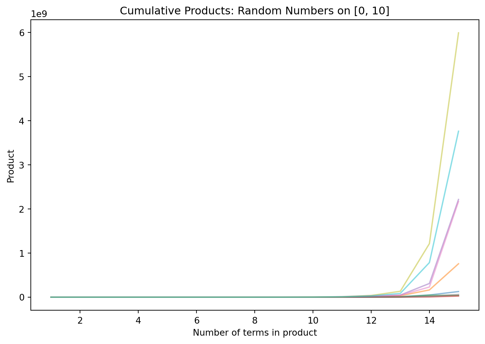

import numpy as np
# establish random number generator with seed for reproducibility
rng = np.random.default_rng(seed=6538)
print(rng.uniform(low=0, high=1, size=5))[0.79730922 0.18164333 0.11063476 0.81771383 0.18290457] |
|---|
| Photo by Mika Baumeister on Unsplash |
Let’s start with a refresher of uniform numbers: numbers that are uniformly- distributed on an interval \([a, b]\) can assume any decimal value in that range without preference to any particular subinterval. They’re the usual thing people mean when they talk about “random numbers”. Here’s a bit of Python code to generate five independent uniformly-distributed numbers on \([0, 1]\):1
import numpy as np
# establish random number generator with seed for reproducibility
rng = np.random.default_rng(seed=6538)
print(rng.uniform(low=0, high=1, size=5))[0.79730922 0.18164333 0.11063476 0.81771383 0.18290457]And here’s a visualization of ten thousand uniformly-distributed numbers generated on \([0, 1]\):
import matplotlib.pyplot as plt
fig, ax = plt.subplots()
ax.hist(rng.uniform(low=0, high=1, size=10000),
bins=10,
edgecolor='black'
)
ax.set_title('10K random numbers uniformly distributed on [0,1]')
plt.show()All bars have roughly equal heights with no discernible trends. Now, let’s ask an interesting question: What happens if we multiply all these numbers together?
print(rng.uniform(low=0, high=1, size=10000).prod())0.0Okay, I lied; that’s not interesting at all. Since all those numbers are less than 1, every time we throw a new one into the product, the product will just get smaller. The end result will be something positive, but computationally indistinguishable from 0. Let’s watch this in action by graphing how the products evolve after just a few terms:
# length of sample path, i.e. number of uniformly-distributed numbers within
# each product group
n = 15
# generate ten sample paths of random walk, organized in columns
uniform_nums = rng.uniform(low=0, high=1, size=10*n).reshape([n, 10])
# find the cumulative products within columns, starting from the top;
# the kth element in a given column is the product of the k numbers that lie on
# or above it
sample_path = uniform_nums.cumprod(axis = 0)
fig, ax = plt.subplots()
# plot each of the columns as separate paths
for i in range(10):
ax.plot(np.linspace(1,n,n), sample_path[:, i], alpha=0.5)
ax.set_title('Cumulative Products: Random Numbers on [0, 1]')
ax.set_xlabel('Number of terms in product')
ax.set_ylabel('Product')
plt.show()This is a visualization of ten different ‘runs’ of products, each of which consists of multiplying fifteen numbers uniformly drawn on \([0, 1]\). As expected, the products collapse to 0 almost immediately.
So, what if we make the numbers bigger? Instead of restricting them to \([0, 1]\), let’s spread them out a bit and consider numbers uniformly distributed on \([0, 10]\). This time, about \(10\%\) of the numbers will be less than 1 (and thereby make the product smaller), but the other \(90\%\) of the numbers will be between 1 and 10 (and thereby make the product bigger). Maybe that will be enough….?
print(rng.uniform(low=0, high=10, size=10000).prod())infYep! This time, we get a huge number that Python can’t distinguish from infinity. Let’s visualize this like before:
# length of sample path, i.e. number of uniformly-distributed numbers within
# each product group
n = 15
# generate ten sample paths of random walk, organized in columns
uniform_nums = rng.uniform(low=0, high=10, size=10*n).reshape([n, 10])
# find the cumulative products within columns, starting from the top;
# the kth element in a given column is the product of the k numbers that lie on
# or above it
sample_path = uniform_nums.cumprod(axis = 0)
fig, ax = plt.subplots()
# plot each of the columns as separate paths
for i in range(10):
ax.plot(np.linspace(1,n,n), sample_path[:, i], alpha=0.5)
ax.set_title('Cumulative Products: Random Numbers on [0, 10]')
ax.set_xlabel('Number of terms in product')
ax.set_ylabel('Product')
plt.show()
Looking carefully at the y-axis shows that after just fifteen terms, a few of our products became very large; the largest of the ten trials in the graph above is about 6 billion, and five of the ten trials are over 1 billion. Putting all this together, we might (correctly) guess what happens: the more terms we throw into the product, the higher it goes, generally speaking.
So, to recap: we’ve computed a product of many numbers generated uniformly on \([0, C]\) with two different values of \(C\).
Now, we actually have an interesting question… Where is the cutoff? That is, for what value of \(C\) does the product switch from being very small to being very large?
One reasonable first guess is that something interesting might happen when \(C = 2\). If our numbers come from \([0, 2]\), then half of them will make the cumulative product bigger, and half of them would make it smaller.
But….
rng.uniform(low=0, high=2, size=10000).prod()0.0And just to make sure that \(2\) is not right on the boundary of some change in behavior….
rng.uniform(low=0, high=2.1, size=10000).prod()0.0So, the change of behavior doesn’t come at \(C = 2\); evidently, it’s something higher than \(2\) (and lower than \(10\)).
Before I reveal the correct answer, I want to point out that you, the reader, can play around with this yourself! If you have a place to run some Python code, here’s a snippet to get started:
from numpy.random import default_rng
rng = default_rng()
print(rng.uniform(low=0, high=10, size=10000).prod())If you don’t have a place to run Python code, I can provide one! Here’s a Google Colab notebook that you can open and run right away; no setup or Python installation required on your local machine at all. You can use this Colab notebook to experiment with the problem even if you have no prior experience in programming.
When you’re ready to see the answer, it’s here.
Technically, these are pseudorandom numbers; von Neumann might accuse me of living in a state of sin if I conflate the two. They’re also just floating-point approximations of real numbers, not the genuine article. That’s all okay; the magic will happen anyway despite these indiscretions.↩︎